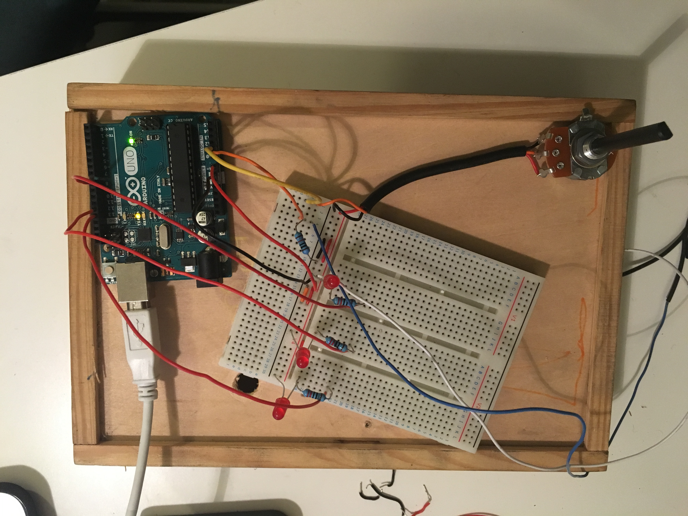
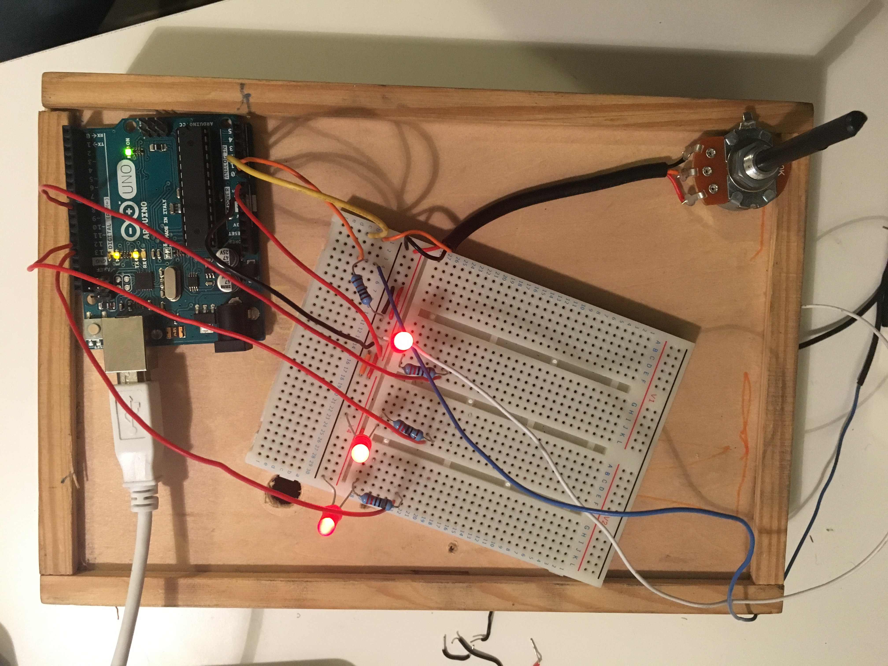

Arduino
For the Arduino component of the project workshops we wer encouraged to experiment with the device and write our own Arduino C code . The range of sensors and output devices is vast and we were given a limited selection to work with. I decided to work with the sensors that I had been given and incorporate some LED's into my device.
I created a very simple circuit that took input from a potentiometer and controlled the state of 3 LEDs or light emitting diodes. By turning the pot from its lowest point to its highest, the LEDs would turn on in sequence. The same occurred in the opposite direction, the LEDs would sequentially turn off according to the direction/range of the potentiometer. Links are provided to download a ZIP file containing all code used in this project.
Arduino
It was neccessary to use a resistor on each of the LEDs in order to regulate the voltage and protect both the Arduino and the LEDs.
I also used a breadboard to carry out the basic wiring of the circuit.
The Code
The code used to achieve this basic microcontroller device is included in this zipped file and does not include any external libraries.
A mapping function is used to scale the ranges generated by the potentiometer from 0 - 1023 to 0 - 100. Each LEDs state corresponds to a predefined range i.e. 1 -33 = LED 1 ON, 33 - 66 = LED 2 ON et.c
Again, the code used in this project can be retrieved by following this link where the ZIP file can be downloaded.
A top down view of my circuit showing all LEDs turned on.
The video shows the device in action. It captures the potentiometer being turned and the corresponding LEDs switching on and off accordingly.
Download a ZIP of the code used in this project here.